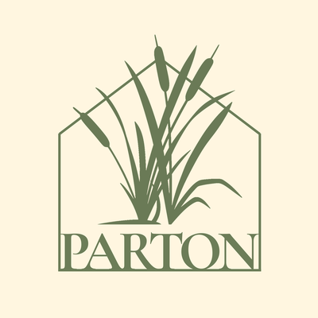

Rólunk
Egy régi álom a tó partján
A Parton története jóval azelőtt kezdődött, hogy az első vendégek megérkeztek volna a rendezvényterembe.
Ahogy elkezdődött
A horgásztavat a szüleim, édesanyám és édesapám együtt indították el. Édesapámnak már akkor volt egy álma: szerette volna, ha egyszer a tó partján állna egy hely, ahol esküvőket, családi ünnepeket tarthatnak.
Ezt az álmát azonban már nem tudta megvalósítani. Korai halála után édesanyám vitte tovább mindazt, amit együtt elkezdtek, és ő építette fel a tó partján a rendezvénytermet. Évtizedeken keresztül gondozta, alakította és üzemeltette a helyet, amely időközben számtalan családi eseménynek, ünneplésnek és közös emléknek adott otthont.

Egy újabb fejezet
Édesanyám átadta nekem a helyet, én pedig szeretném továbbvinni mindazt, amit ők ketten elkezdtek – egy kicsit újragondolva, de megőrizve azt, amiért annak idején megszületett.
Így lett belőle Parton.

Amit meg szeretnék őrizni
A régi gerendák, a természetes fa, a tó közelsége és a körülöttünk lévő természet mind részei annak a hangulatnak, amit szeretnék megőrizni. Kicsit rusztikus, kicsit romantikus, természetközeli és otthonos.
Itt egy rendezvény lehet elegáns anélkül, hogy merev lenne. Lehet szépen megterített vacsora a teremben, hosszú beszélgetés a vízparton, egy pohár bor a naplementében vagy egyszerűen csak egy nap azokkal, akik igazán fontosak.

Hiszem, hogy egy hely különlegességét nem csak a falak adják, hanem azok a történetek is, amelyek hozzá kötődnek.
A Parton számomra ezért több mint egy rendezvényhelyszín. Egy családi történet folytatása. Egy régi álom, amely most új formában él tovább.
És remélem, hogy közben egy olyan hely lesz, ahol más családok történetének legszebb pillanatai is megszülethetnek.

A legjobb pillanatok a Parton kezdődnek.
Mutassuk meg személyesen is: írj nekünk, és egyeztetünk egy időpontot.
Ajánlatkérés